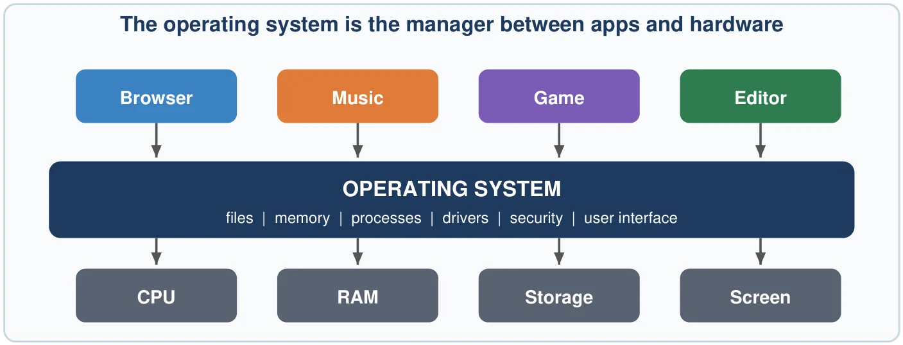

2. Operating systems for computers
The operating system (OS) is the manager of the computer. It controls the hardware, runs applications, manages files, and provides the screen and menus you use.
2.1 What an OS does
- Starts and stops programs (process management).
- Shares RAM and CPU time between programs.
- Stores and organizes files.
- Talks to hardware through drivers.
- Provides security: users, passwords, permissions.
- Provides the user interface (desktop, windows, icons).
2.2 Popular desktop operating systems
| OS | Made by | Strengths | Developer notes |
|---|---|---|---|
| Windows | Microsoft | Most common on PCs; huge software choice; many hardware options | Good for web, Android, Flutter and game development |
| macOS | Apple | Smooth design; strong for creative work; Unix-based terminal | Required to build and publish iPhone (iOS) apps with Xcode |
| Linux | Open source community (Ubuntu, Fedora, Debian) | Free, customizable, stable; runs most of the world's servers | Favorite for backend work and servers |
| ChromeOS | Light, fast, browser-based | Limited; best for web use |

Figure 2.1: The OS manages hardware for every app
2.3 Why platforms matter
A program built for Windows cannot automatically run on macOS, because each OS offers different system tools. This idea, called platform dependence, is the main reason mobile developers must choose between Android, iOS or a cross-platform tool.
Key idea Websites avoid this problem. They run inside a browser, and the browser exists on every OS.
2.4 Which computer should a student use?
- For web and Android: any modern Windows, macOS or Linux computer with at least 8 GB RAM (16 GB is more comfortable for the Android emulator).
- For iPhone apps: a Mac is required.
- No money for a new computer? Start with web development; it needs only a basic laptop and a browser.
Review Questions
- List four jobs of an operating system.
- Why is a Mac needed for iOS development?
- Why do websites work on all operating systems?
Was this lesson helpful?